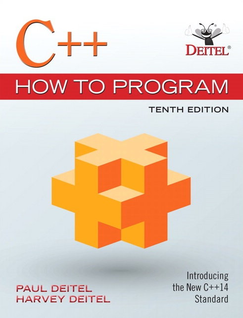

Course Details
Textbooks and Reference Book
- Recommended textbooks
 - Paul Deitel, Deitel & Associates (2017). C++ How to Program.
Link to UST library for 2014 version
There are only few copies available in the campus bookstore. On the other hand, you may purchase an e-version of book from the campus bookstore for HK$316. We were told that it may take around 3 days to get the code for an ebook.

- M.A. Weiss (2014). Data Structures and Algorithm Analysis in C++.
The book is out of print. You may be able to find some free PDF copy on the Web.
- Data
Structures and Algorithm Analysis Ed. 3.2 (C++ Version).
The above links to a free online version of the book from the author, Clifford A. Shaffer of Virginia Tech, USA.
- Paul Deitel, Deitel & Associates (2017). C++ How to Program.
- Supplementary textbooks


Topics Covered
- Revision of dynamic data structures
- C++ class basics
- Separate compilation and makefile
- Constructors, destructor, initialization
- Inheritance, polymorphism, and dynamic binding
- Generic programming
- STL: containers, iterators, algorithms
- Namespace
- Static member functions/data
- Hashing
- Binary search trees
- AVL tree
- rvalue reference and move semantics
Intended Learning Outcomes
On successful completion of this course, students are expected to be able to:- Write object-oriented programs in C++ with object creation, destruction, member variables and functions, inheritance, polymorphism, and templates.
- Analyze simple problems and provide solutions with OOP.
- Understand the basic operations of data structures such as stacks, queues, lists, binary search trees, and hashes, and their implementations.
- Demonstrate the ability to use the learned data structures to solve problems in C++.
- Develop large programs using separate compilation, good OOP design, and code reuse through the use of inheritance, generic programming and the standard template library.
Prerequisites & Exclusions
Pre-requisite: COMP 1003 (prior to 2011-12) OR COMP 1004 (prior to 2013-14) OR COMP 2011. Exclusion: COMP 2012H.